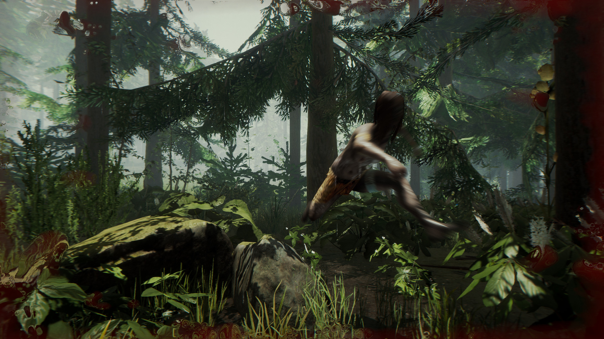
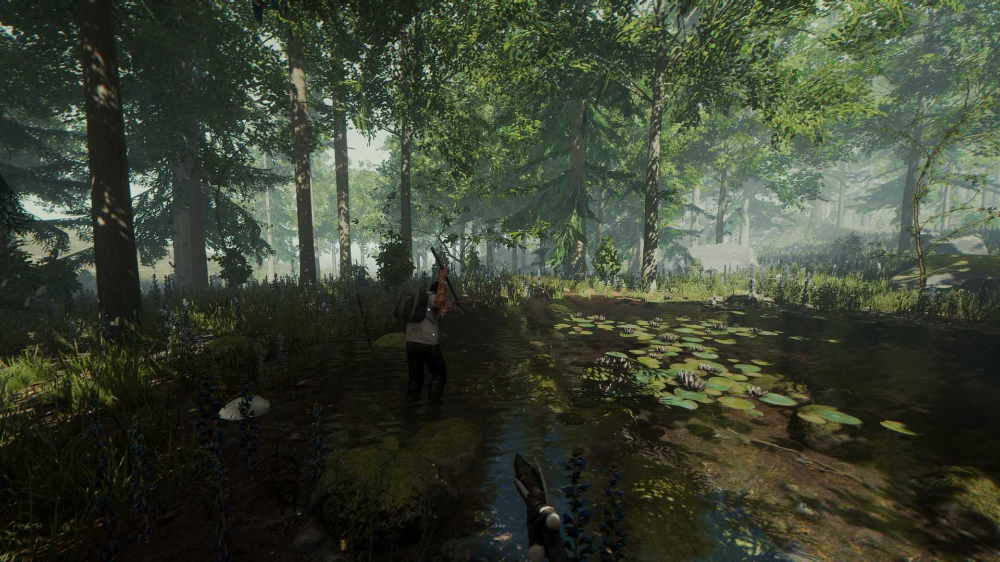
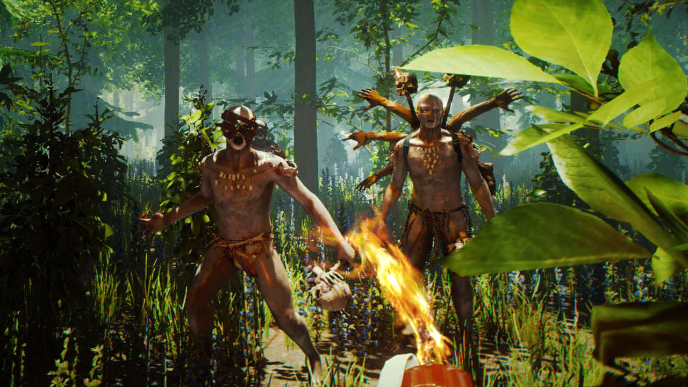
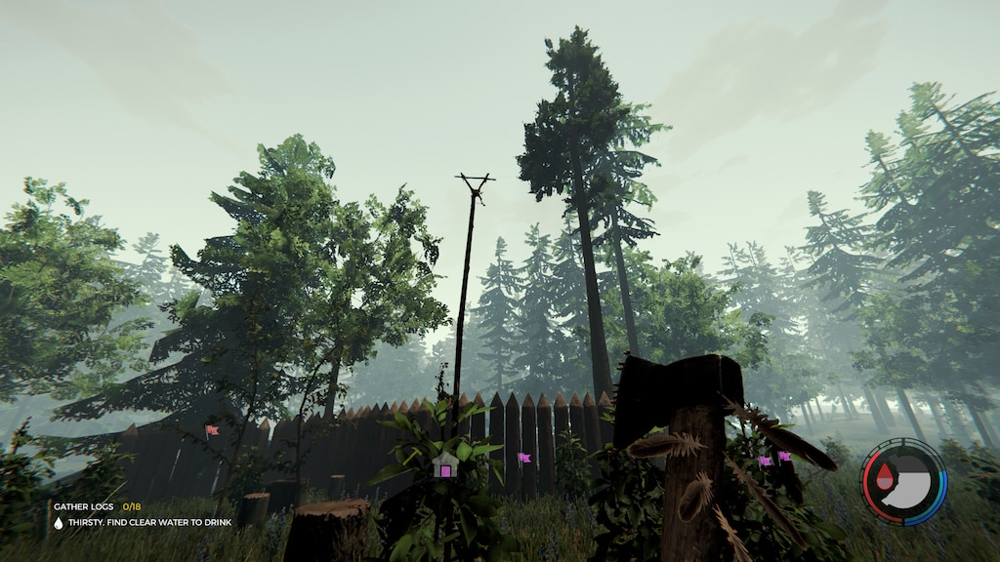
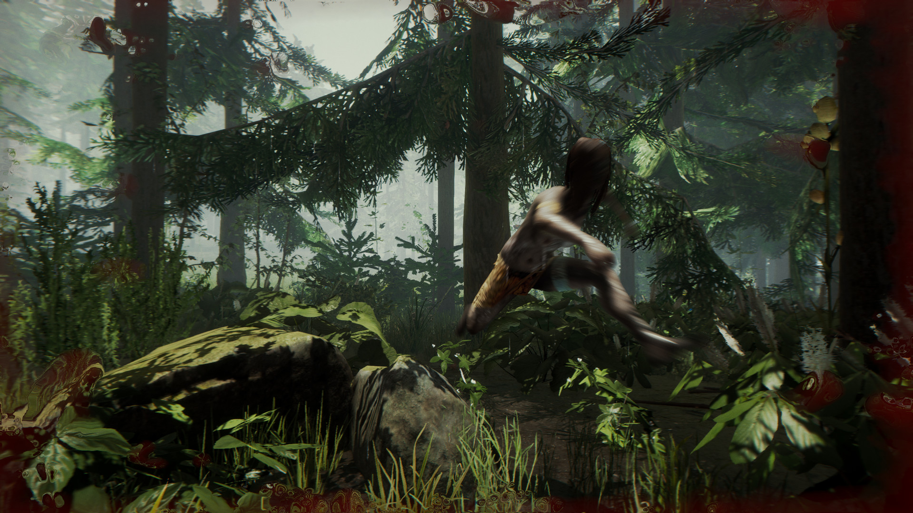
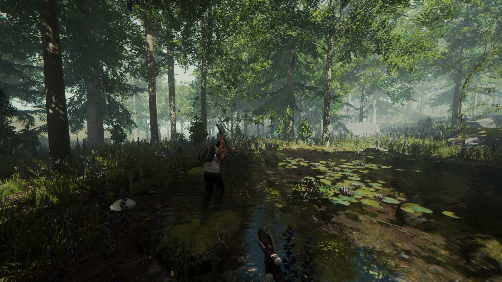
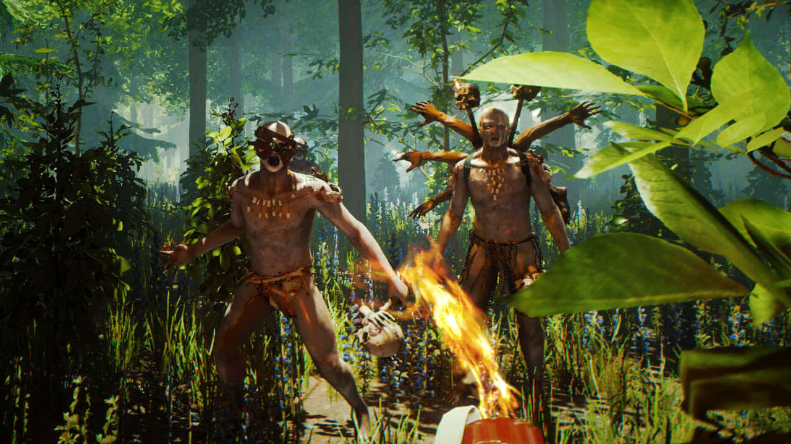
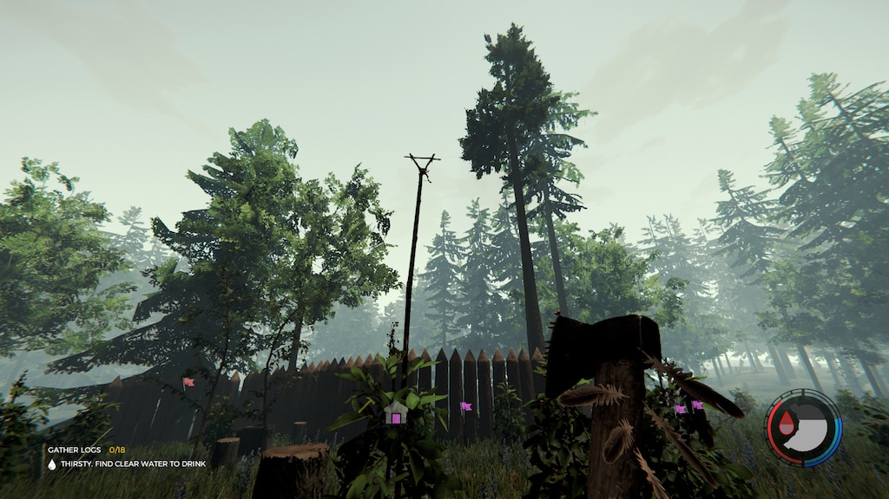

Hayatta kalma ve korku türlerini bir araya getiren, oyuncuyu doğrudan bir kabusun içine atan eşsiz bir açık dünya deneyimi sunuyor. Bir uçak kazasından sağ kurtulan bir yolcu olarak, ıssız bir ormanda hayatta kalmaya çalışırken kayıp çocuğunuzu bulmaya çalışıyorsunuz. Ancak bu orman göründüğü kadar sakin değil; karanlıkta saklanan, vahşi ve gizemli yaratıklarla dolu.
Hikaye ve Atmosfer
Oyunun temel hikayesi, sizi sadece hayatta kalmaya değil, aynı zamanda adım adım gizemli bir sır perdesini aralamaya davet ediyor. Ormanın her köşesi, korkutucu bir hikaye anlatıyor. Gündüzleri kaynak toplayıp barınak inşa ederken, geceleri tehlikeli yerlere adım atarken tetikte olmanız gerekiyor.
Hayatta Kalma Mekanikleri
Hayatta kalmak için avlanmak, bitki toplamak ve barınaklar inşa etmek zorundasınız. Açlık, susuzluk ve enerji seviyenizi dengede tutmalı, aynı zamanda tehditlerle başa çıkmalısınız. Oyunun crafting sistemi, oyuncuya geniş bir özgürlük sunuyor; ister bir kale inşa edin, ister taşınabilir bir kamp kurun.
Düşmanlar ve Korku Unsurları
Ormandaki düşmanlar, sadece hayatta kalma zorluklarına değil, aynı zamanda oyuncunun korkularına da meydan okuyor. Yamyam kabileler ve mutant yaratıklar, sürekli bir gerilim yaratıyor. Yapay zekâları oldukça etkileyici; saldırgan, savunmacı veya tamamen sürpriz davranışlar sergileyebiliyorlar.
Çok Oyunculu Deneyim
Tek başınıza hayatta kalmak yeterince zorken, arkadaşlarınızla birlikte bu deneyimi daha eğlenceli hale getirebilirsiniz. Çok oyunculu modda, stratejilerinizi birleştirerek daha büyük yapılar inşa edebilir, kaynakları daha verimli kullanabilir ve düşmanlarla birlikte mücadele edebilirsiniz.
Grafikler ve Detay Seviyesi
Oyunun grafikleri, doğal bir güzelliği ve rahatsız edici bir karanlığı mükemmel bir şekilde birleştiriyor. Ormanın detaylı tasarımı, gece-gündüz döngüsü ve hava durumu efektleri, atmosferi oldukça gerçekçi kılıyor. Işık ve gölge oyunları, korku hissini daha da yoğunlaştırıyor.
Keşif ve Gizem
Oyunda sadece hayatta kalmak değil, aynı zamanda ormanın sırlarını çözmek de temel bir hedef. Yer altı mağaraları, gizli bölgeler ve terk edilmiş yapılar, her biri farklı ipuçları ve tehlikelerle dolu. Çocuğunuzu bulma arayışı, sizi hem fiziksel hem de psikolojik sınırlarınıza kadar zorluyor.